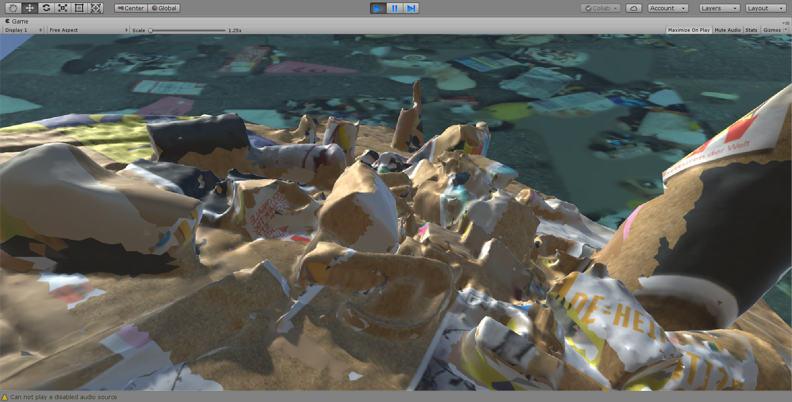
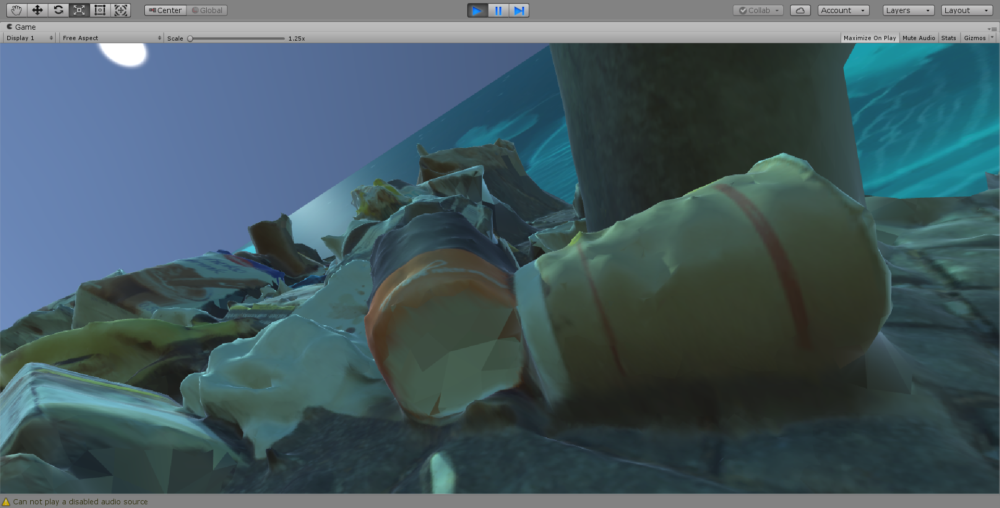
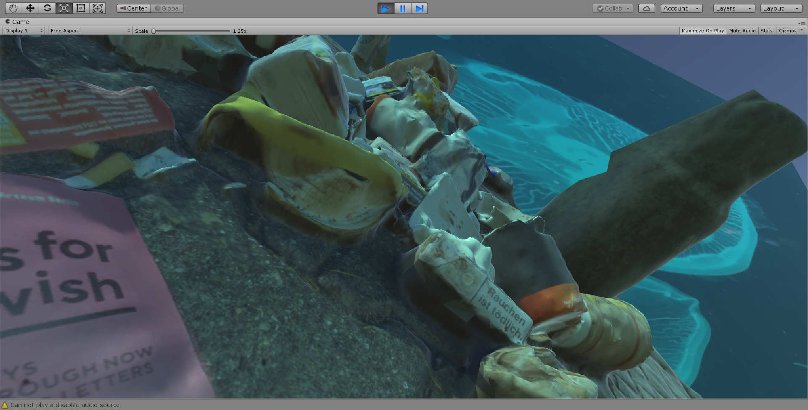
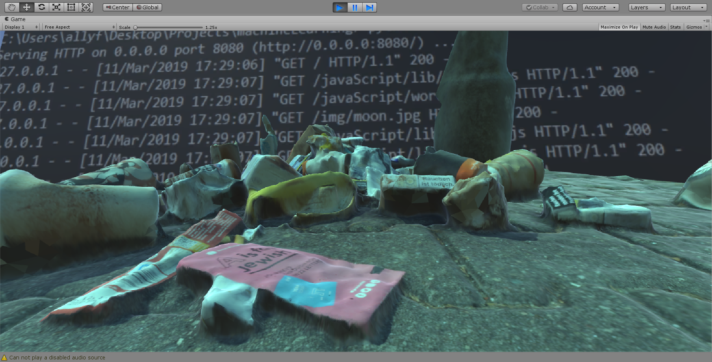
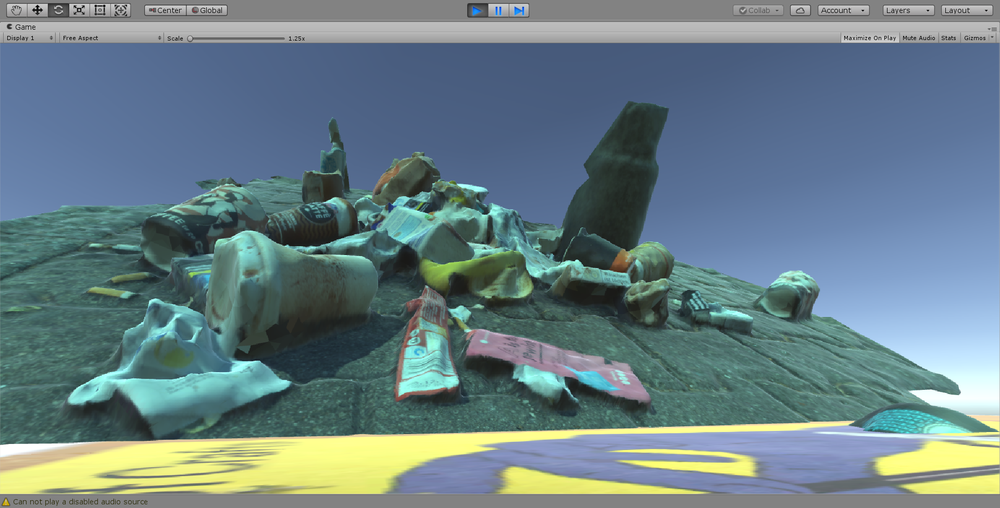
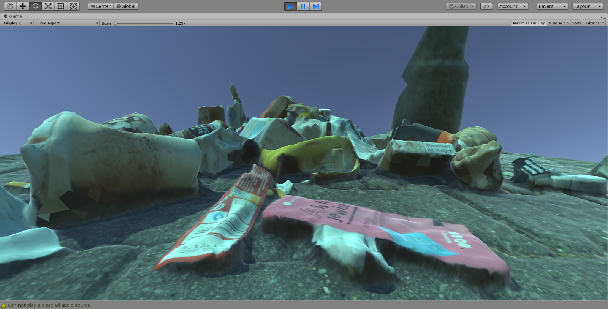
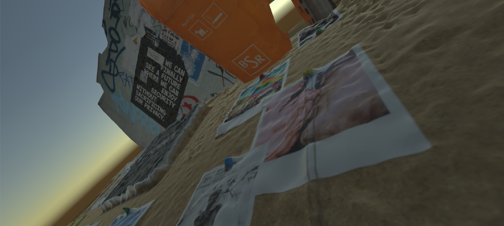
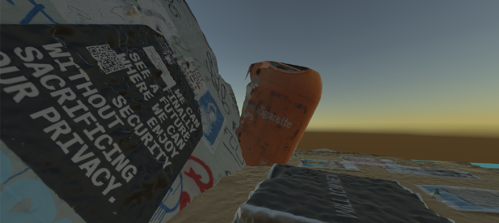
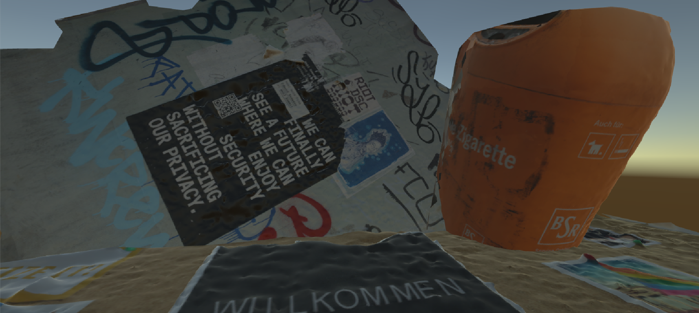

"Views of Berlin"
Berlin, 2019
"Views" was created as part of a studio art course at NYU Berlin. For this, I utilized photogrammetry to create scans of objects that were omnipresent within my daily life in Berlin. After these models were created, I positioned them within a Unity Environment, and combined external images to create a dichotomy between elements. After the scene was assembled, I printed them out in large format and created a collage. Images below will include the display of the project along with progress shots.








